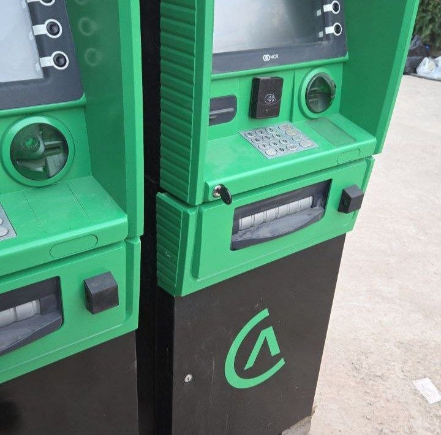
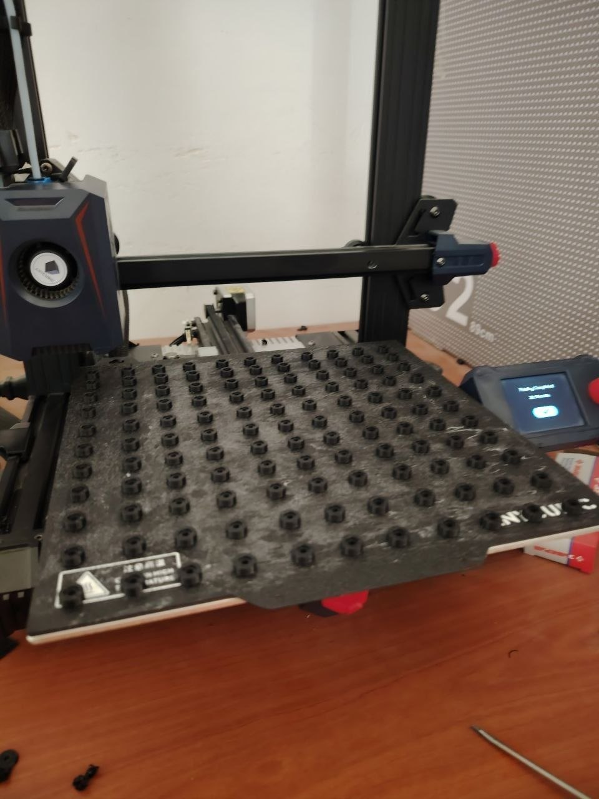
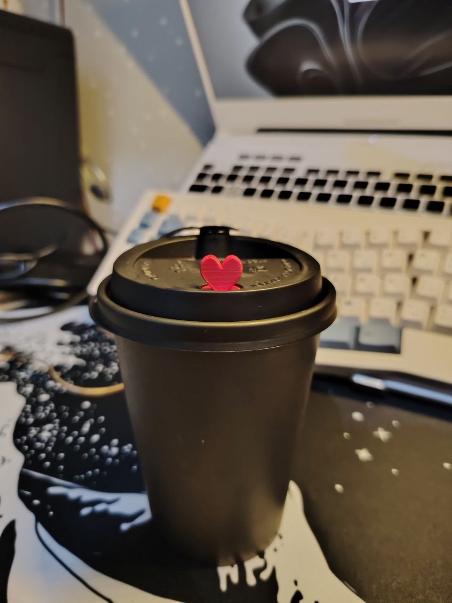
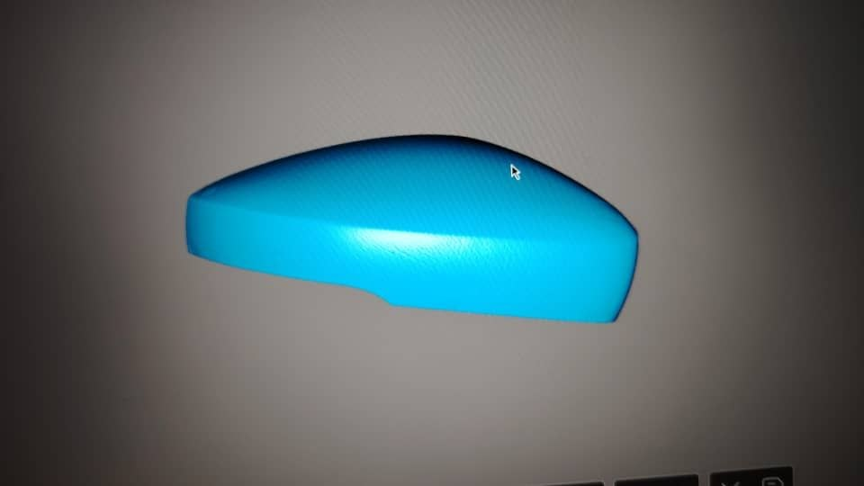
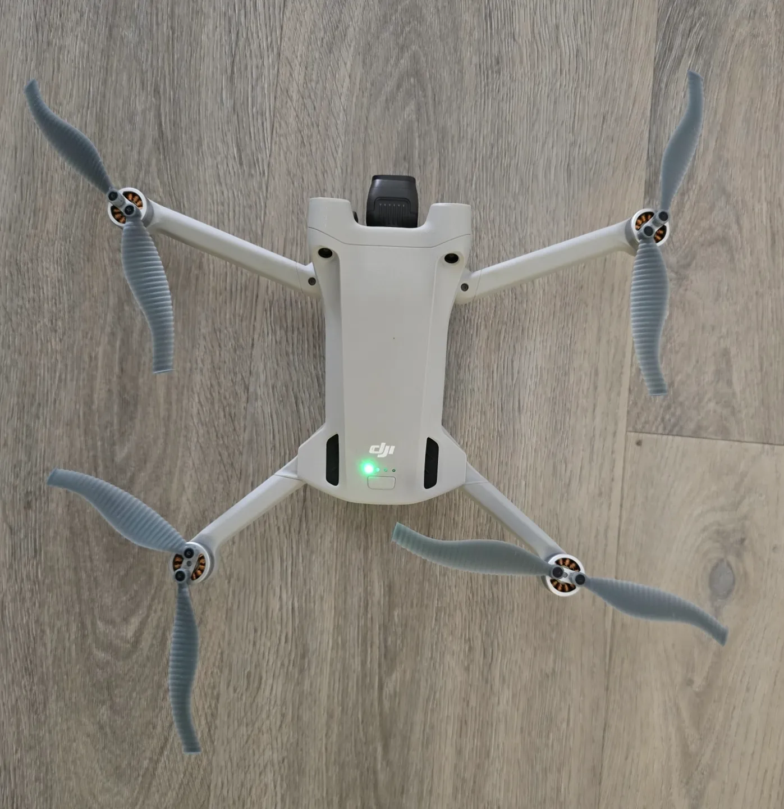
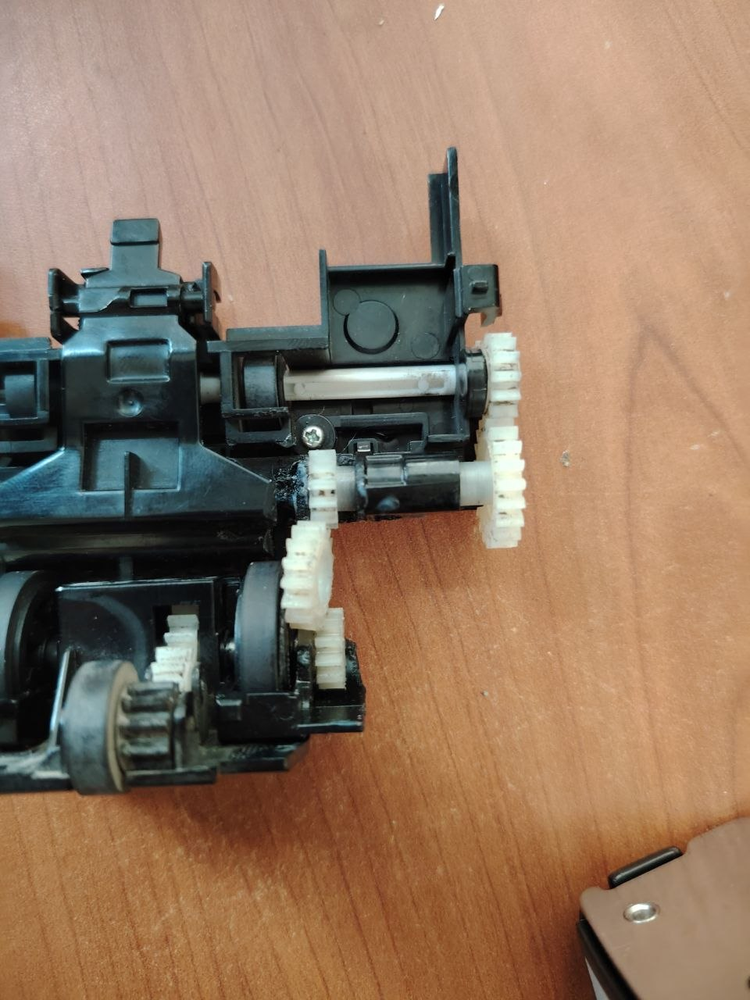

КЕЙС / FINTECH
ALIF BANK
100+ КОРПУСОВ
Разработали и произвели специализированные корпуса для видеокамер банкоматов, установленных по всей стране. Локальное изготовление помогло закрыть задачу без ожидания партии из-за рубежа.
РЕАЛЬНЫЕ ЗАДАЧИ · РЕАЛЬНЫЕ РЕЗУЛЬТАТЫ
От крупных партий для финансового сектора до деталей, которые нужно было восстановить или изготовить ещё вчера. Каждый кейс — конкретная задача, на которую мы нашли рабочее решение.
деталей для банкоматов Dushanbe City
на изготовление всей партии
корпусов камер для банкоматов Alif Bank по всей стране
ИЗБРАННЫЕ ПРОЕКТЫ

Разработали и произвели специализированные корпуса для видеокамер банкоматов, установленных по всей стране. Локальное изготовление помогло закрыть задачу без ожидания партии из-за рубежа.

Выпустили крупную партию инженерных деталей для банкоматов всего за четыре дня. Когда оборудование должно работать без остановок, скорость поставки каждой детали имеет значение.

Создаём брендированные топперы и трафареты для рисунков на пенке. Среди клиентов — Time Cafe и сеть Campnam Chicken / Камнам. Небольшие тиражи и индивидуальный дизайн позволяют делать мерч под конкретный бренд.

Сканируем, восстанавливаем и печатаем редкие автомобильные детали, когда оригинал сложно найти или заказ из-за рубежа слишком долог. Работаем с нестандартными задачами вместе с мастерскими.

Когда перед важной съёмкой срочно понадобилась деталь, изготовили лопасти квадрокоптера за пару часов. Локальное производство выручает, когда ждать уже некогда.

Помогаем поддерживать кассовое оборудование и кофемашины в работе: восстанавливаем и производим внутренние компоненты, которые не всегда удобно заказывать отдельно.